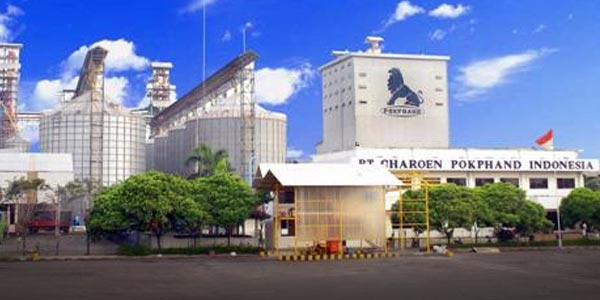
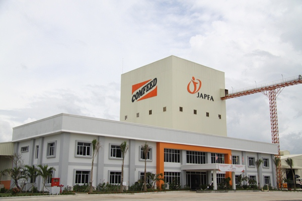

Profil Perusahaan Industri Pakan Ternak
PT Chroen Pokphand Indonesia Tbk
PT. Charoen Pokphand Indonesia Tbk (CPIN) adalah perusahaan berbasis agribisnis di Indonesia.Perusahaan juga memproduksi kantong plastik anyaman
dan peralatan peternakan.CPIN terbagi menjadi beberapa unit, seperti pakan ternak, pengembangbiakan ternak, pengolahan ternak, dan unit kantong plastik.
CPIN didirikan di Indonesia dibawah nama PT. Charoen Pokphand Indonesia Animal Feedmill Co. Limited. CPIN mempunyai enam pabrik pakan ternak yang terletak di Banten, Jawa Timur, Sumatra Utara, Jawa Tengah, dan Sulawesi Selatan.CPIN juga memiliki tiga pabrik pengolahan ayam yang terletak di Banten, Jawa Tengah,
dan Jawa Timur.CPIN juga memiliki pabrik peralatan ternak dan fasilitas pengeringan dan penyimpanan jagung yang terletak di Banten dan Lampung.
Sumber Laporan Keuangan

PT Japfa Comfeed Indonesia Tbk
PT Japfa Comfeed Indonesia Tbk merupakan salah satu perusahaan yang bergerak dalam bidang agri-food terbesar dan ter-integritas di Indonesia.Unit bisnis utama perusahaan ini yakni pembuatan pakan ternak, pembibitan ayam,
pengolahan unggas serta pembudidayaan pertanian.Keunggulan dari perusahaan ini meliputi integrasi vertikal dan skala ekonomi.Hal ini dimaksud bahwa perusahaan menjalin hubungan baik antara operasional yang dilakukan di hulu dengan hilir. Dengan dijaganya hubungan tersebut maka akan terjamin kualitas produk yang unggul. Di samping itu dengan skala ekonomi,
Japfa menawarkan produk-produk dengan biaya yang terjangkau bagi konsumen Indonesia.

PT Malindo Feedmil Tbk
PT. Malindo Feedmill Tbk MAIN) merupakan perusahaan multinasional yang memproduksi pakan ternak yang bermarkas di Jakarta, Indonesia.
Perusahaan ini didirikan pada tahun 1997 dan terdaftar di Bursa Efek Indonesia pada tahun 2006, sebagai bagian dari Leong Hup Holdings Berhad,
Malaysia dan Emivest Berhad, Malaysia (keduanya terdaftar di Bursa Malaysia). Perusahaan ini bergerak dalam bidang produksi dan perdagangan pakan ternak, terutama pakan untuk ayam broiler (pedaging), ayam layer (petelur).
Selain itu perusahaan ini juga memiliki anak usaha yang memproduksi dan memasarkan parent stock DOC (Day Old Chicks), DOC komersial dan ayam Broiler.

PT Sierad Produce Tbk
PT Sierad Produce, Tbk (“Sierad Produce”) didirikan pada tanggal 6 September 1985 dengan nama PT Betara Darma Export Import. Pencatatan saham perdana di Jakarta Stock Exchange pada tahun 1996 dan telah menjadi salah satu perusahaan peternakan unggas terpadu di negeri. Sierad Produce fokus pada inti kompetensinya, yaitu produksi pakan ternak,
produksi anak ayam umur sehari (“DOC”), peternakan ayam komersial, contract growing, pemotongan ayam dan produksi makanan olahan dan
produk ayam bernilai tambah. Visi Sierad Produce adalah menciptakan timbal balik berkesinambungan yang dapat diterima oleh para pemegang saham dengan
menjadi perusahaan peternakan unggas terpadu berbasis makanan terkemuka di Indonesia.
Analisis dan Perancangan
© 2018 Talitha Dwi Aditya | Design by W3layouts